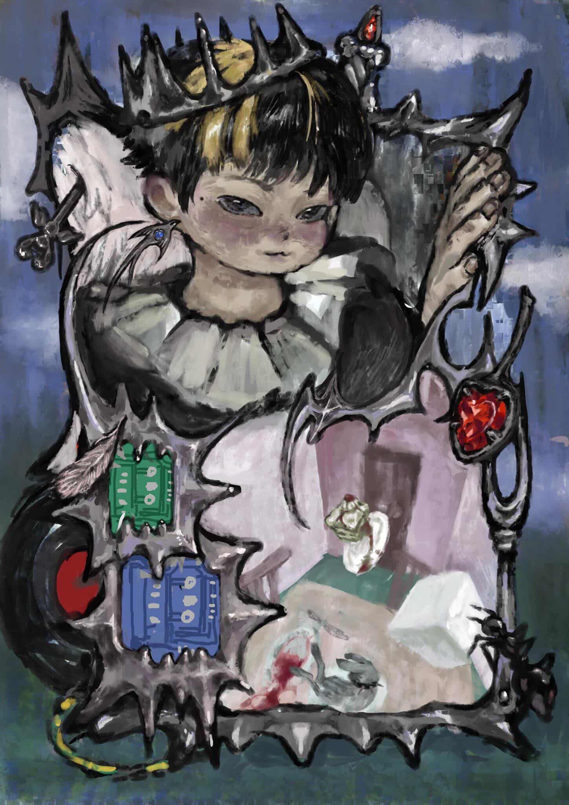
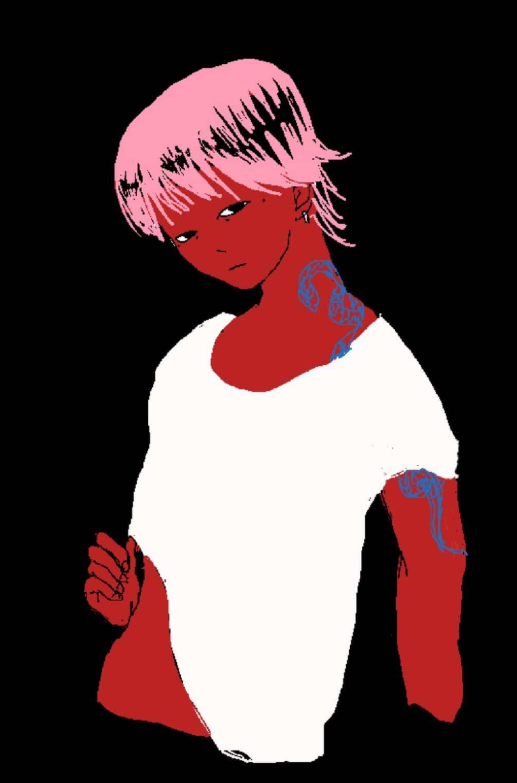
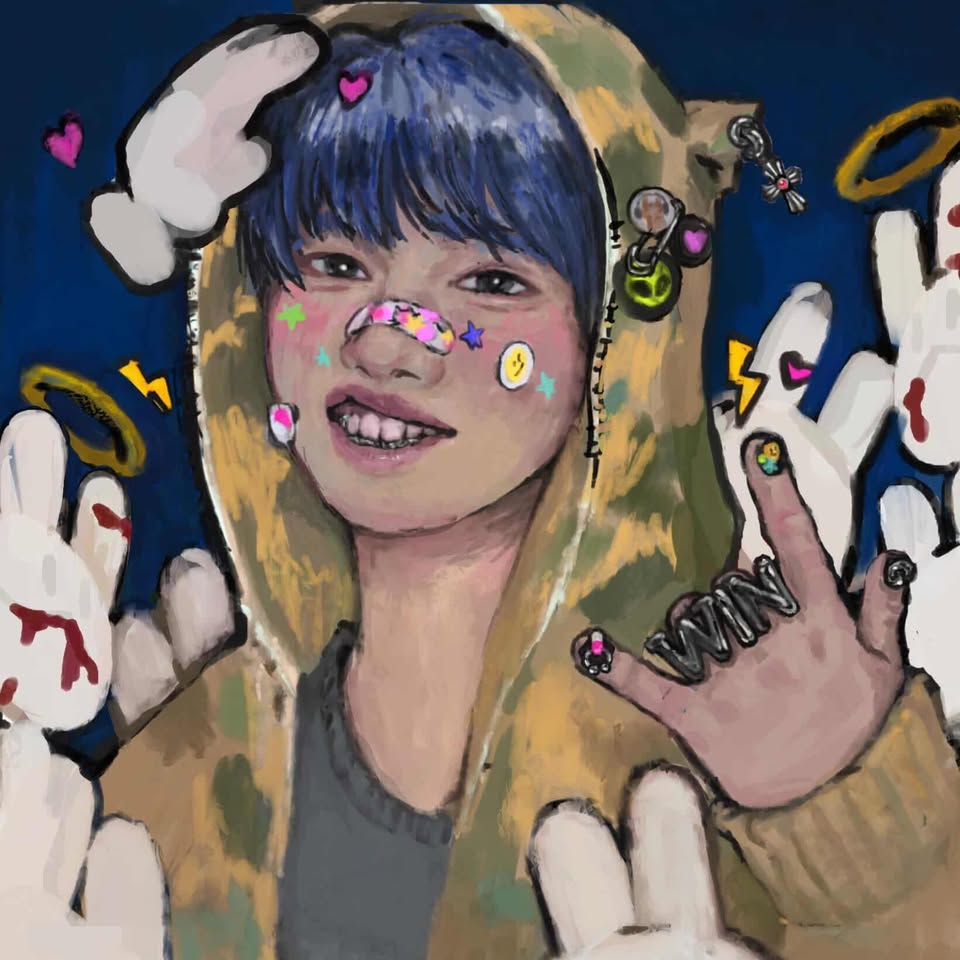
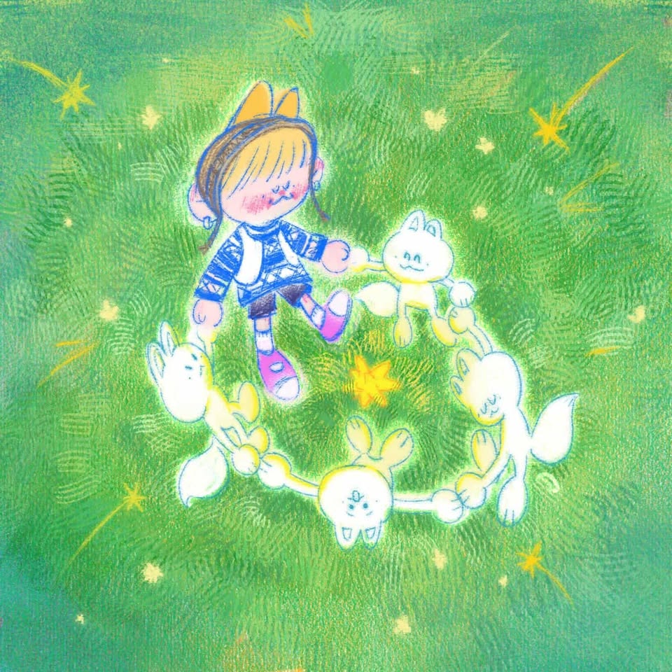
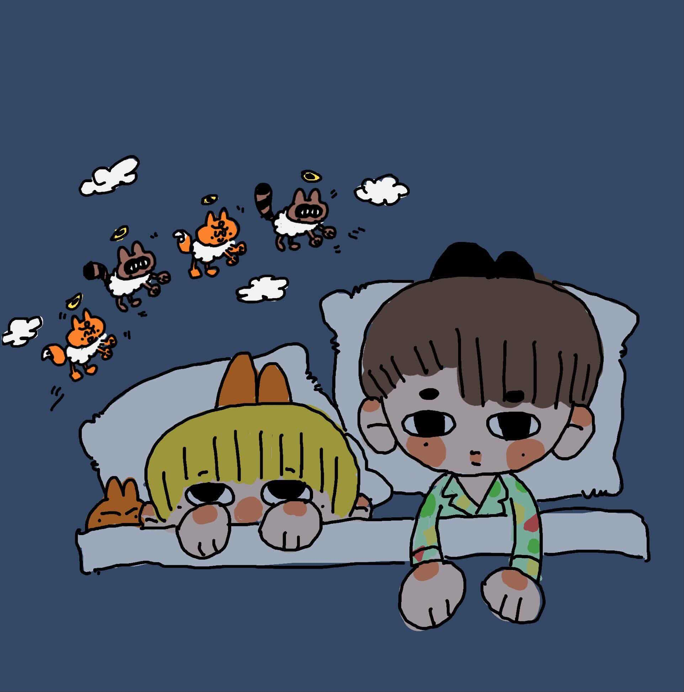
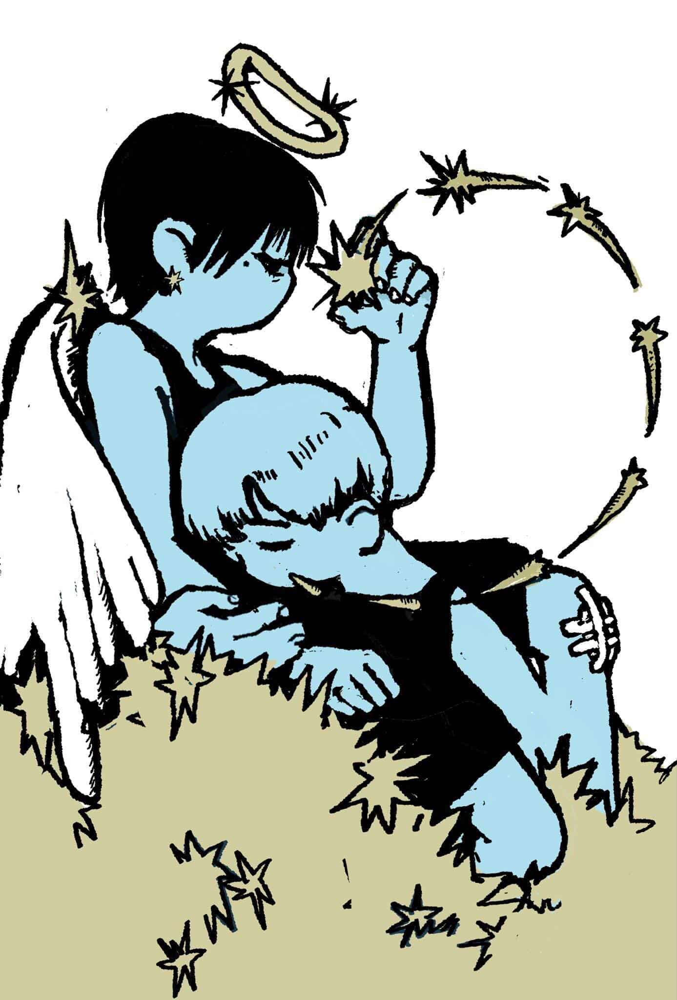
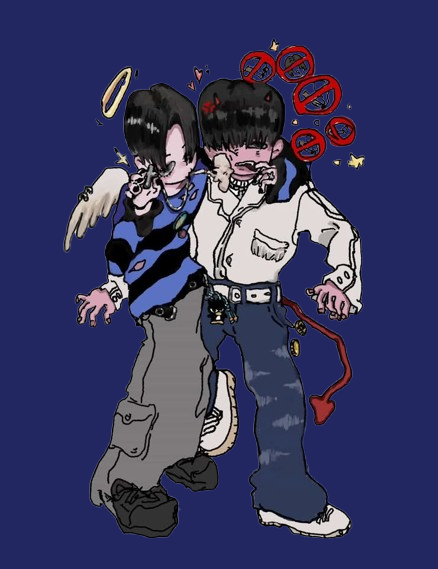
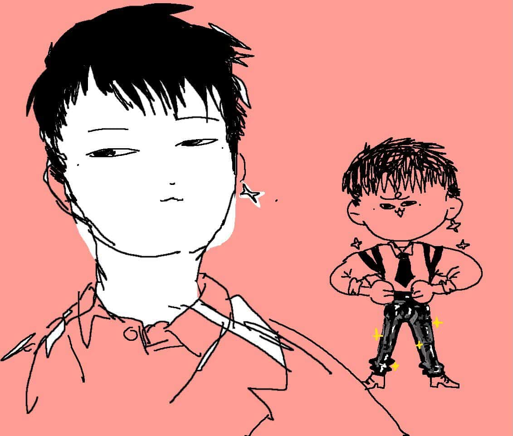
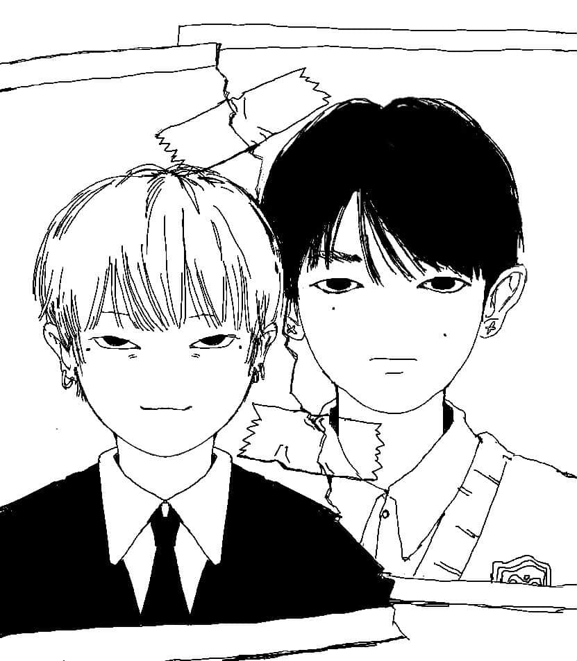
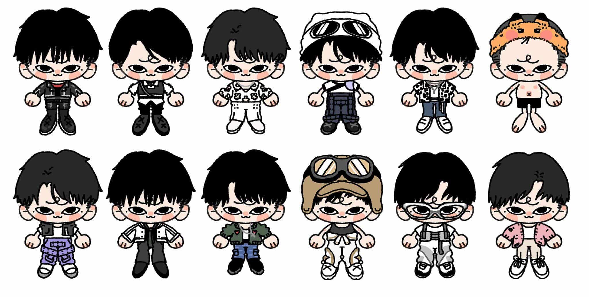

My Art


Lifelong Creative
I've always been into creative stuff since I was younger. Art is just one way I express things I can't really say properly.


The Art Student Journey
Being an art student basically means everything is always changing. I use digital work a lot just to keep track of my progress over time.

Visual Archive
I kind of treat this page like a storage space for ideas. Everything from sketches to random concepts ends up here.



Expression through Art
This whole page is basically just a collection of things that inspire me or represent what I'm working on at the moment.

